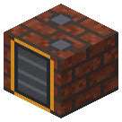
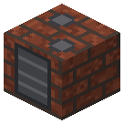
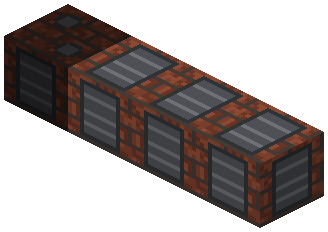
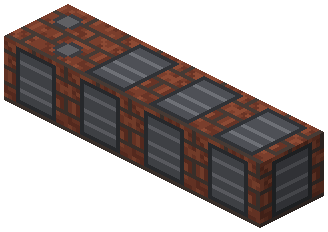
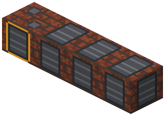

Коксовая камера


Параметры
| Эпоха | 2 — Пар и механика |
|---|---|
| Многоблок | да: секции в ряд вбок; секции |
| Привод | топка / своё |
| Баки, mB | 32000, 16000 |
| что делает | 64 угля -> 48 кокса + коксовый газ + креозот; секции до 3 |
| энергия на входе | огонь только на розжиг, дальше свой газ |
| на выходе | коксовый газ (2000/1000 mB) |
| из чего | кирпич коксовой печи RC, печь, железные листы |
Числа
| коксовая батарея: уголь на загрузку камеры | 64 шт |
|---|---|
| коксовая батарея: кокс с загрузки | 48 шт |
| коксовая батарея: время загрузки | 16000 тик |
| коксовый газ с угля | 100 mB |
| смола с угля | 25 mB |
Кого кормит
- Railcraft:fuel.coke → Электролизная ванна, Бессемеровский конвертер
- Коксовый газ → Ступица газовой турбины
- creosote → Паровой автоклав, Химический реактор, Реактор высокого давления
Как устроено (из кода)
Коксовая батарея с улавливанием продуктов (Копперс, Отто, 1880-1900-е). Этот блок - головная камера: загрузка угля, выгрузка кокса, топка розжига, баки газа и смолы. Секции батареи (BlockCokeSection) ставятся вплотную В РЯД вбок от неё (вдоль оси, поперёк лица; влево и/или вправо), до MAX_SECTIONS: камер = 1 + секций. Шкала: игровой час = 1000 тиков; реальная камера 15-18 ч на доменный кокс. - каждая камера коксуется на СВОЁМ цикле, как на настоящей батарее (загрузка по графику): набралось CHARGE угля и есть свободная камера - она загружается. Недогруз камеры не допускается; батарея целиком сразу не грузится; - цикл TIME тиков; с камеры: COKE кокса (75% массы), газ GAS_PER_COAL mB на уголь (по ходу цикла), смола (креозот); - обогрев: камера в ряду греет общие стены - одиночная HEAT[0] (40% газа загрузки), крайняя в ряду HEAT[1] (32.5%), средняя HEAT[2] (25%). Тепло - из своего газа (GAS_HEAT тиков на mB), пока газа нет - из топливного слота (розжиг); - газ, которому некуда деться (бак полон), сжигается на свече - батарея не встаёт; - ряд секций, упёршийся в другую головную камеру, не считается ни одной из них (секции не делятся). Слоты: 0 и 3 уголь, 1 топливо розжига, 2 и 4-6 кокс, 7 зола розжига (A2; полна - розжиг гаснет). Баки: 0 коксовый газ, 1 креозот (оба - выход). Ряд, обогрев и график загрузки - общий код TileBattery (с 1.56.27, там же пиролизная печь).
Сборка
Секции между двумя головными — ничьи. Разобрал секцию — её загрузка пропала.

Головная камера лицом к себе: загрузка, выгрузка, топка, баки.

Секции вплотную в ряд вбок, вдоль лица (влево и/или вправо), до 3 — тут 3: каждая — ещё одна загрузка.


Бледное — поставлено на прошлых шагах.